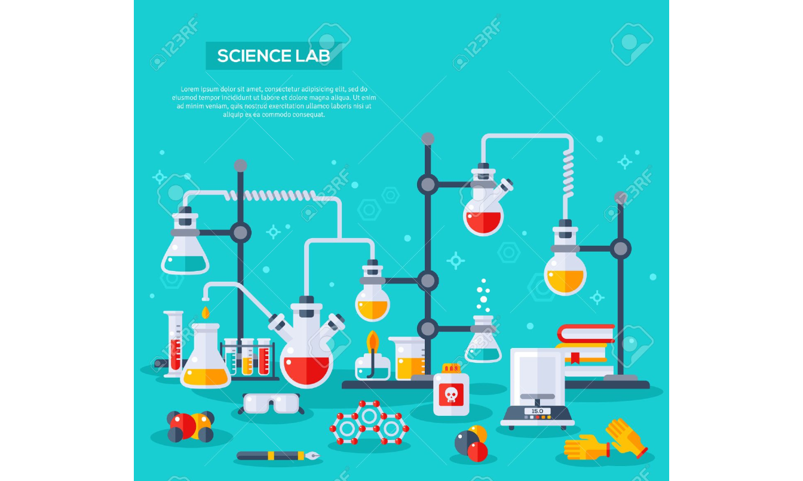
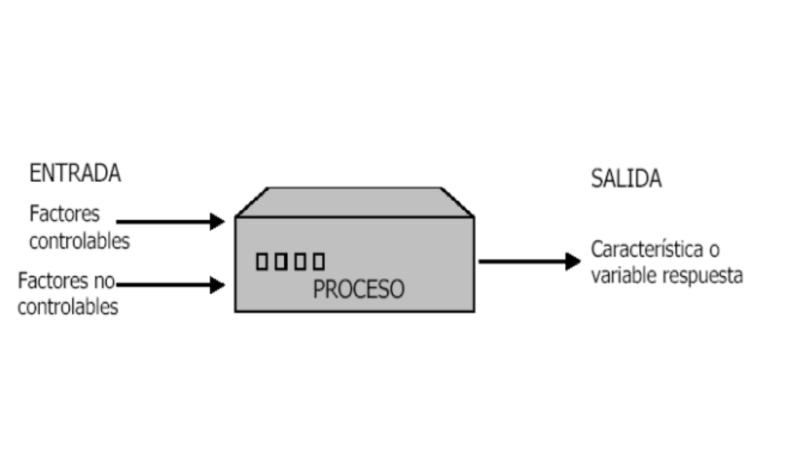

Varianza
##Objetivos del diseño experimental
Planear pruebas experimentales, de forma que los datos generados se analicen estadísticamente para obtener conclusiones válidas y objetivas sobre un proceso.
Utilizar técnicas estadísticas para manipular un proceso con el fin de obtener la mayor información posible.
Determinar qué pruebas y cómo realizarlas, para extraer conclusiones y tomar decisiones sobre un proceso.
###Aplicaciones del diseño experimental
En la industria
Comparar proveedores del mismo material para elegir el que mejor cumple especificaciones.
Comparar sistemas de medición para verificar si trabajan con la misma precisión y exactitud.
Proponer nueva manera de operar un proceso, variar sus condiciones y hacer cambios para reducir defectos.
Determinar factores o fuentes de variabilidad con impacto en la capacidad del proceso para cumplir requerimientos.
Localizar condiciones de operación para desempeño óptimo del proceso.
Proponer métodos de muestreos efectivos y más económicos.
Reducir tiempo de ciclo del proceso.
Hacer proceso robusto a oscilaciones de variables no controlables.
Apoyar en el diseño o rediseño del producto o proceso.
En la investigación
Validar una hipótesis mediante evidencia objetiva.
Generar conocimiento y aprendizaje de forma eficiente. Dirección del aprendizaje: conocimiento, conjeturas, imaginación, experimentación, análisis y reflexión.
Evaluación y comparación de diseños básicos.
Evaluación de materiales alternativos.
Selección de parámetros del diseño para que el producto tenga un buen funcionamiento en una amplia variedad de condiciones de campo.
##Introducción al análisis de varianza

Al iniciar el estudio, el investigador desarrolla una lista de verificación de aspectos:
Objetivos específicos del experimento.
¿Cuáles variables respuesta se van a medir?
Qué factores influyen, cuáles de ellos varían y cuáles permanecen constantes.
¿Cuáles factores serán controlables en el experimento?
¿Qué niveles debe usarse de cada factor?
Procedimientos particulares para realizar las pruebas o medir las características.
Número de repeticiones del experimento.
Recursos y materiales disponibles.
Las preguntas que centran nuestra atención a través del proceso de diseño incluyen:
¿Cuál es mi objetivo?
¿Qué quiero saber?
¿Por qué quiero saberlo?
¿Cómo voy a realizar el experimento?
¿Por que hago el experimento?

Consideraciones prácticas
Las metodologías estadísticas por sí solas no garantizan investigaciones exitosas:
El conocimiento no estadístico es vital: Se requiere buen conocimiento técnico y práctico del proceso.
Reconocer la diferencia entre significancia estadística e importancia práctica: diferencias estadísticas no siempre corresponden a diferencias prácticas de importancia.
Preferir la experimentación secuencial que un experimento único y definitivo: La experimentación secuencial alcanza paulatinamente mayor precisión en los conocimientos y soluciones. Seguir una estrategia bien definida y pensada.
###Definiciones del diseño experimental
Experimento
Cambio deliberado en las condiciones de operación de un proceso, con el fin de medir el efecto sobre una o varias propiedades del producto.
Tratamiento
Conjunto de circunstancias creadas para el experimento, en respuesta a la hipótesis de investigación. Entre los ejemplos de tratamientos se encuentran dietas de animales, producción de variedades de cultivos,temperaturas, tipos de suelo y cantidades de nutrientes.
En un estudio comparativo se usan dos o más tratamientos y se comparan sus efectos en el sujeto de estudio.
Unidad experimental
Objeto o sujeto básico expuesto al tratamiento, sobre el cual se obtiene una medición o dato representativo
Una pieza: En el estudio de la resistencia a la tracción de cierta componente
Un lote o grupo de piezas: En el estudio de la proporción de defectuosos en una operación
La unidad experimental expuesta al tratamiento, constituye una réplica del tratamiento.
Las unidades de observación y las experimentales pueden ser claramente distintas
La unidad de observación puede no ser equivalente a la unidad experimental. La primera puede ser una muestra de la última, como muestras individuales de plantas de una parcela.
Ejemplo: Un estudio sencillo de raciones de dieta animal tiene un corral con seis animales asignados a la ración A y otro con seis más asignados a la ración B. Se reúnen datos sobre el aumento de peso. Al final del estudio, se toman de cada animal las medidas necesarias.
Unidad experimental:El corral, porque es la unidad a la que se administró el tratamiento independiente.
Unidades de observación: Los animales en el corral.

Variable respuesta Característica o propiedad medida en cada unidad, cuyos cambios se desean estudiar.
Factores controlables Variables del proceso que se pueden fijar en un valor o nivel de operación, ya que existe el mecanismo para cambiar su nivel. También se les llama variables de entrada, condiciones de proceso, o variables de diseño. Ej. Temperatura, velocidad, presión, concentración, tiempo de aplicación, etc.
Factores no controlables o de ruido Variables que no se pueden controlar durante la operación normal del proceso. Ej. Variables ambientales, usos de un producto por los usuarios, etc.
Factores estudiados Variables cuyos efectos sobre la respuesta se investigan en el experimento: Pueden ser posiblemente controlables o no controlables durante el experimento. Se requiere probarlos en al menos dos niveles. Los factores en principio pueden afectar la media o la variabilidad de la variable respuesta.
Niveles Valores asignados a cada factor de estudio.
Tratamiento o punto de diseño Combinación de niveles de factores
| Niveles de factor A (A1,A2) | Niveles de factor B (B1,B2) | tratamiento |
|---|---|---|
| A1 | B1 | A1B1 |
| A1 | B2 | A1B2 |
| A2 | B1 | A2B1 |
| A2 | B2 | A2B2 |
Error aleatorio
Variabilidad observada que no se puede explicar por los factores estudiados, es debido a “causas comunes o aleatorias”, que generan la “variabilidad inherente del proceso”. Incluye efectos pequeños de factores no estudiados, variabilidad de las mediciones hechas bajo mismas condiciones.
Error experimental
Describe la variación entre las unidades experimentales tratadas de manera idéntica e independiente. Los distintos orígenes del error experimental son:
La variación natural entre unidades experimentales.
La variabilidad en la medición de la respuesta.
La imposibilidad de reproducir las condiciones del tratamiento con exactitud de una unidad a otra.
La interacción de los tratamientos con las unidades experimentales.
Cualquier otro factor externo que influya en las características medidas.
Ejemplo
La imposibilidad de reproducir el tratamiento con exactitud se da cuando las réplicas de los tubos de ensayo se preparan de modo independiente, con la misma mezcla de compuestos, y el peso de los productos químicos obtenidos en cada tubo difiere en 0.1 microgramo (pg). Los procesos en pipetas o básculas no son exactos, por lo tanto, introducen una pequeña variación durante la preparación del tratamiento.

Un importante objetivo de los cálculos estadísticos es lograr una estimación de la varianza del error experimental. En su forma más simple, el error experimental es la varianza en unidades de las observaciones del experimento, cuando las diferencias entre éstas se pueden atribuir sólo al error experimental.
NOTA No se deben dejar variar libremente a factores que pueden ser influyentes sobre la respuesta: Principio de bloqueo. Ejemplo Factores y variables en la fabricación de un envase plástico:

Estudios por observaciones comparativas
Son aquellos para los que desearíamos hacer un experimento, pero no es posible por razones económicas, prácticas o éticas.
El investigador tiene en mente condiciones o tratamientos que tienen efectos causales en sujetos para los que no es posible efectuar experimentos hasta obtener respuestas. Los investigadores de las ciencias sociales, ecología, vida silvestre, vida marina y otros recursos naturales, a menudo han de llevar a cabo estudios por observación en vez de la experimentación directa.
Ejemplo Considerando un estudio para comparar la severidad de las lesiones por accidentes automovilísticos con y sin el cinturón de seguridad puesto; sería clara la falta de ética si se asignara al azar un tratamiento de personas con cinturón y sin cinturón y después se provocaran colisiones de los autos contra una pared de concreto, tampoco habría quién se prestara para esto. En su lugar, los investigadores se apoyan en los datos de lesiones en los accidentes y comparan los datos de cinturón puesto y sin cinturón.

Hipótesis de investigación
Establece un conjunto de circunstancias y sus consecuencias. Los tratamientos son una creación de las circunstancias para el experimento. Así, es importante identificar los tratamientos con el papel que cada uno tiene en la evaluación de la hipótesis de investigación.
Relación entre los tratamientos y las hipótesis
Cuando se eligen los tratamientos adecuados en respuesta a una hipótesis de investigación, es posible comprender mejor los procesos físicos, químicos biológicos o sociales.
A continuación se presentan tratamientos, usados en el marco de investigaciones reales, generados por hipótesis de investigación:
- Se estudió la cinética de bebida de las abejas productoras de miel a diferentes temperaturas ambientales, para responder a la hipótesis de que la energía requerida al reunir comida para la colonia era independiente de la temperatura.

- La supervivencia de siembras de Euphorbia (género de plantas) atacadas por un patógeno del suelo se determinó para distintos tipos de tratamientos de fungicida, en respuesta a la hipótesis de que no todos los fungicidas tienen la misma eficiencia para controlar tal patógeno.
Tratamiento control
Muchas veces se requieren tratamientos adicionales para evaluar por completo las consecuencias de la hipótesis. Una componente importante de muchos diseños de tratamiento es el tratamiento de control.
El tratamiento de control es un punto necesario para evaluar el efecto de los tratamientos experimentales; existen diversas circunstancias en las que el tratamiento de control es útil y necesario. Un control al que no se da tratamiento revelará las condiciones en las que se efectuó el experimento.
Control local de errores experimentales
Los principales objetivos de la mayoría de los experimentos son las comparaciones claras y exactas entre tratamientos a través de un conjunto apropiado de condiciones.
El control local describe las acciones que emplea un investigador para reducir o controlar el error experimental, incrementar la exactitud de las observaciones y establecer la base de la inferencia de un estudio.
El investigador controla:
- Técnica.
- Selección de unidades experimentales
- Bloquización o aseguramiento de la uniformidad de información en todos los tratamientos.
- Selección del diseño experimental.
- Medición de covariables (son variables relacionadas con la variable respuesta que nos interesa).
Etapas del diseño experimental
Varias preguntas deben resolverse antes de la experimentación:
¿Cuántos tratamientos van a ser estudiados?
¿Cuántas veces observar cada tratamiento (réplicas)?
¿Cuáles son las unidades experimentales?
¿Cómo se aplicarán los tratamientos a las unidades experimentales disponibles y luego observar las respuestas?
¿Puede el diseño resultante ser analizado o se pueden hacer las comparaciones deseadas?

#Principios del diseño
1. Aleatorizar para tener inferencias válidas
“la sola aleatorización proporciona estimaciones válidas de la varianza del error” (Fisher, 1926). La aleatorización es la asignación al azar de tratamientos a las unidades experimentales, permitiendo:
La validación del error experimental
Evita sesgos.
Garantiza la independencia de los errores.

##2. Bloqueo
Mientras más parecidas sean las unidades experimentales, mejor serán las comparaciones entre los tratamientos.
En la mayoría de los experimentos es imposible seleccionar todas las unidades experimentales idénticas.
La no similaridad entre las unidades experimentales contribuye al ruido.
Los experimentos pueden ser mejorados si agrupamos las unidades experimentales dentro de grupos de unidades cercanamente similares, llamadas unidades homogéneas.
Los tratamientos pueden ser comparados sobre las unidades experimentales similares donde la variación de grupo puede ser considerada para el análisis. Los grupos de unidades similares u homogéneas son denominados bloques.
Objetivo del bloqueo Seleccionar y agrupar el material experimental de modo que el ruido o error experimental en el experimento sea reducido. Así, las unidades experimentales sobre las cuales los tratamientos van a ser comparados deberían ser tan parecidas como sea posible para que la menor diferencia significativa entre dos tratamientos pueda ser detectada.
Control de factores bloque y de ruido
Controles posibles sobre fuentes de variación adicionales a factores de estudio:
Bloqueo activo durante el experimento, lo que implica que el factor de ruido es parte del estudio y aparece explícitamente. En la práctica sólo controlar factores de bloque que se saben son influyentes y económicamente factibles de fijar en distintos niveles: operadores, tipos de producto, lotes, turnos, tipos de material, etc.
Nulificar los efectos al mantenerlos fijos en valor usual durante estudio: Resultados son válidos sólo para nivel seleccionado.
Aplicar aleatorización para nulificar efecto indeseable de factores de ruido: Posible efecto es repartido “equitativamente” en todos los tratamientos, y no se puede medir tal efecto posible. E.j. Variables ambientales, cansancio operadores, calentamiento equipo, variables que en general se mueven solas con el tiempo.
3. Replicar para obtener experimentos válidos
La réplica implica una repetición independiente del experimento básico, cada tratamiento se aplica de manera independiente a dos o más unidades experimentales. Existen diversas razones para hacer réplicas de un experimento, las más notables son:
- Permiten estimar el error experimental
- Ejerce control sobre la varianza del error experimental
- Mejora la precisión de un experimento mediante la reducción de la desviación estándar de una media de tratamiento
- A mayor número de repeticiones mayor precisión
- Aumenta el alcance de la inferencia (I.C. y pruebas de hipótesis.)
#ANALISIS DE VARIANZA ANOVA
Herramienta estadística para estudiar la relación entre una variable respuesta y una o más variables explicatorias.
No requiere ningún supuesto acerca de la relación estadística entre la variable respuesta y las predictoras.
No requiere que las variables predictoras sean cuantitativas.
Estructura de un diseño experimental
El diseño experimental comprende:
Elección de la estructura de tratamiento
Elección de la estructura de diseño y el método de aleatorización
ESTRUCTURA DE TRATAMIENTOS
Conjunto de tratamientos que el experimentador ha seleccionado para estudiar y/o comparar.
- Estructura de tratamiento de un sólo factor.
- Estructura de tratamientos factoriales (dos o más factores)
- Estructura de tratamientos \(2^k\) y estructura de tratamientos factoriales fraccionados
##ESTRUCTURA DE DISEÑO
Agrupamiento de las unidades experimentales dentro de grupos homogéneos o bloques:
- Diseño completamente aleatorizado
- Diseño bloqueado: - De bloques completos aleatorizados: Cuadrados latinos y grecolatinos - De bloques incompletos
Por lo general las comparaciones se hacen en términos de las medias poblacionales, aunque también es importante la comparación de varianzas y capacidad actual para cumplir ciertas especificaciones. A manera de resumen las estructuras del diseño son
| Diseño | Factores de bloque | Técnicas estadísticas | Modelo estadístico |
|---|---|---|---|
| Completamente aleatorizado | 0 | ANOVA con un solo criterio de clasificación | \(\large Y_{ij}=\mu+\alpha_i+\varepsilon_{ij}\) |
| Bloques completamente aleatorizado | 1 | ANOVA con dos criterios de clasificación | \(\large Y_{ij}=\mu+\alpha_i+\beta_j+\varepsilon_{ij}\) |
| Cuadrado latino | 2 | ANOVA con tres criterios de clasificación | \(\large Y_{ij}=\mu+\alpha_i+\beta_j+\gamma_k +\varepsilon_{ijk}\) |
| Cuadrado greco latino | 3 | ANOVA con cuatro criterios de clasificación | \(\large Y_{ij}=\mu+\alpha_i+\beta_j+\gamma_k+\delta_l +\varepsilon_{ijkl}\) |
Donde:
- Y es la variable respuesta
- \(\large \mu\) es la media global -\(\large \alpha_i\) es el efecto del i-ésimo tratamiento
- \(\large \beta_j, \gamma_k, \delta_l\) efectos de bloques -\(\large \varepsilon\) es el error aleatorio